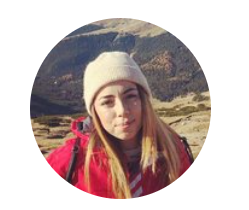

Serbanoiu Laura

Summary
I am a creative hardworking person and I strive for oportunities to develop myself
Education
- Master Degree in Educational Sciences, Didactic Master in Geography - West University of Timisoara (2021-2023)
- Bachelor Degree in Geography, Territorial Planning - West University of Timisoara (2017-2020)
Work Experience
Skills
- SPSS Statistics
- Problem solving
- Question Pro
Certifications
- School of Digital Technologies Continuing Education Curriculum - Design of Serious Games - December 2022
Other
My Hobbies
Contact Me